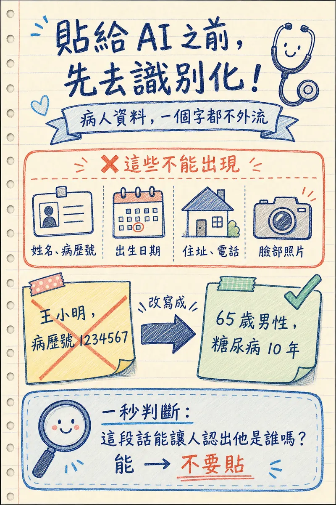

- 這頁教什麼：教病人隱私去識別化的判斷方式與實作範例、AI 幻覺的風險、ChatGPT／Claude／Gemini 免費版的資料使用政策，以及使用 AI 產出內容時的責任界線。
- 適合誰：所有會在工作中使用 AI 的醫療人員，本工作坊的必修課，建議在 Part 2 — AI 文字應用 之後、正式動手產出衛教或文書內容之前讀完。
- 注意：動手前先用 3 秒安全口訣自我檢查 —「有沒有病人資料？會不會給病人看？我能不能負責？」。
為什麼這是必修
醫療工作有兩個一般辦公室場景沒有的特殊性：你手上的資料是病人的隱私，你講出去的話有專業責任。這兩件事讓「隨手把資料貼進 AI」這個動作，風險比在其他行業高出很多。
這堂課不是要嚇你不敢用 AI，而是要讓你安全地用。學完這章，你會知道哪些資訊不能貼、AI 講錯話時怎麼抓出來、免費工具的資料政策長怎樣、出錯時責任在誰身上。之後每一堂創作應用課（文字、圖像、影片）都建立在這個基礎上。
姓名、病歷號、影像、對話紀錄——只要能連回特定病人，就是需要保護的資訊。
AI 產出的內容一旦你拿去用，署名、審核、後果都是你的，不是 AI 的。
AI 編個錯的旅遊景點沒關係；編錯藥物劑量或編出一篇不存在的文獻，代價完全不同等級。
病人隱私與去識別化
這是本頁的核心。原則很簡單：任何會讓人猜到「這是誰」的資訊，都不該貼進 AI 對話框。
什麼算「可識別資訊」
- 直接識別 — 姓名、病歷號、身分證字號、電話、住址
- 間接識別 — 生日＋性別＋居住地區的組合、少見疾病＋小地區（例如「南投某鄉鎮唯一一位罕見疾病患者」）、特殊職業＋年齡＋科別
- 影像中的資訊 — 照片裡的臉、明顯刺青或胎記、病房門牌／床頭卡、X 光片上燒錄的姓名與病歷號
單一項目看起來無害，但組合起來就可能定位到特定病人——這是去識別化最容易失手的地方。
圖片類的處理本站有現成工具：圖片去識別化 可以直接在瀏覽器內框選塗黑截圖上的姓名與病歷號，檔案不上傳，遮完再交給 AI。
去識別化實作範例
王小明，78 歲男性，病歷號 A123456789，住台北市信義區，因肺癌合併肋膜積水於本院胸腔科就診，過去有糖尿病和乙型肝炎病史，太太陳美玲是主要照顧者。
一位高齡男性病患，因肺癌合併肋膜積水於胸腔科就診，同時有糖尿病與慢性病毒性肝炎病史，由配偶擔任主要照顧者。
拿掉的是姓名、病歷號、確切年齡、居住地區；保留的是臨床上有意義的資訊（診斷、共病、照顧者角色）。這樣 AI 還是能給出有用的回應，但已經無法回推到特定病人。
拿不準就不要貼
去識別化做得夠不夠，沒有 AI 幫你把關——責任在使用者，不在 AI。如果一個案例特殊到「怎麼改寫都還是看得出是誰」（例如全院唯一一例的罕見疾病），最安全的做法是完全不描述真實案例，改用假設情境或教科書上的典型案例。

AI 幻覺
AI 會用非常流暢、非常有自信的語氣講錯話——這叫「幻覺」（hallucination）。它不是偶爾當機才會發生，而是語言模型的本質：它預測「聽起來合理的下一個字」，不是在資料庫裡查證。
可能給出過期指引、錯誤劑量單位換算，或混淆相似藥名。
最危險的一種——AI 會編出格式完全正確、但根本不存在的論文標題、作者、期刊、DOI。
盛行率、死亡率、有效率這類數字容易被「四捨五入到聽起來合理」，但未必有真實來源支持。
免費工具的資料使用
📅 資訊更新於 2026 年 7 月 — 各家政策會不定期調整，實際規則以官方公告和帳號內的設定畫面為準。
三家常用的免費 AI 工具，預設狀態下都可能把你的對話內容用於模型訓練，但都提供關閉選項：
免費版和付費個人版預設會用對話訓練模型。可在「設定 → 資料控制 → 改善模型（Improve the model for everyone）」關閉，關閉後套用到未來的新對話。
消費版（含免費版）預設會用於訓練，可在「設定 → 隱私設定」關閉；官方也提供 Incognito（隱身）對話模式，該次對話一律不用於訓練。
只要「Gemini Apps 活動紀錄」是開啟狀態，對話就可能被用來改善服務與訓練模型；關閉活動紀錄可以退出，但代價是不會保留對話歷史。
機構帳號 vs 個人帳號
如果你的醫院、診所有簽約採購的「企業版」或「機構版」AI 帳號，資料處理條款通常跟免費個人帳號不同（例如承諾不用於訓練、資料留在特定地區）。用機構帳號處理工作內容，比用個人免費帳號安全——但仍然要先去識別化，機構條款保護的是資料流向，不是你貼了什麼進去。
責任界線
記住一句話：AI 輔助，不等於 AI 決策。
- 署名的人負全責 — 不管衛教內容、病摘、社群文案是不是 AI 生成的，掛你名字發出去，內容正確性就是你的責任。
- 臨床決策不能外包給 AI — AI 可以幫你整理資訊、草擬文字、提供思考角度，但診斷、治療計畫、用藥決策這些事，決定權和責任都在你，不在工具。
- 對病人使用前，你有驗收義務 — 任何要給病人看、給病人聽的 AI 產出內容（衛教單張、對話腳本、影片旁白），發布前都要親自看過一遍，確認資訊正確、語氣合適、沒有幻覺內容。
這個原則貫穿整個工作坊——Part 2 AI 文字應用寫的病摘草稿、Part 4 AI 圖像生成的衛教插圖，都要回到這裡的驗收標準：你是最後一道關卡，不是 AI。
使用前檢查清單
🔒 3 秒安全口訣
「有沒有病人資料？會不會給病人看？我能不能負責？」— 記不住下面五題沒關係，先把這三問變成反射動作。這個口訣會在圖像、影片、語音轉文字等每個會碰到資料的課程頁再出現。
時間充裕時，把資料貼進 AI 或把 AI 產出用出去之前，花 30 秒問自己完整的 5 個問題：
- ☐ 這段內容含有可識別特定病人的資訊嗎？（姓名、病歷號、罕見疾病＋地區組合⋯⋯）
- ☐ AI 給的數字和文獻引用，我核對過原始來源了嗎？
- ☐ 這個用法符合我所屬機構的資訊安全政策嗎？
- ☐ 如果這份產出出了錯，責任算在誰身上？我準備好承擔了嗎？
- ☐ 我用的這個工具，資料使用政策我知道嗎（免費版／機構版、會不會被用來訓練）？
五個都打勾，才算準備好
這份清單不是要拖慢你的工作，而是把原本容易忽略的判斷，變成一個固定的、幾秒鐘就能跑完的習慣。養成習慣之後，你會發現大部分時候答案都是「沒問題」——但那少數「有問題」的時候，這份清單就是擋下事故的最後一道防線。